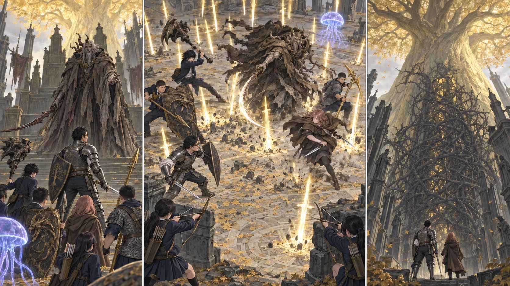

DAY74 / TURN1−84
王を越えても、扉は開かない。

先生「戻る場所は、あの木の中じゃない。皆のところだ」
【DAY74｜王座の前】朝、先生は食料を配り終えると、全員の手を見た。震えている手はある。眠れなかった顔もある。それでも、昨夜より減った人数はない。昨日使った術は戻っていないこと、赤瓶は全員分が残っていることを確かめ、十三人で階段を上がった。メリナの印へ手を伸ばす。助けを借りられるなら借りる。そのために、ここまで来た。
霧の向こうには、空の椅子が並んでいた。座る者を待っているというより、座っていた者の不在を責めているようだった。その前に、角を持つ老人が立っている。マルギット、と誰かが息の中で言った。似ているのではない。同じ声が、今度は王の名を持って答えた。
「また、お前たちか」。モーゴットの目は先生を通り過ぎ、後ろの生徒たちを見た。「一つの野心に、これほどの足音を従えるとはな」。粗い衣をまとった姿は、背後の黄金にまるで似つかわしくない。それでも彼はそこから動かず、王座と侵入者の間に立った。「この都を捨てた者どもに代わり、誰が門を守ってきたと思う」。
先生は、王になるためだ、と答えられなかった。帰りたいからだ、と言って通してもらえる相手でもない。剣を抜き、盾を上げる。「最初は私を見る。皆は、決めた間隔を」。自分が信じる場所を守ろうとする者を倒す。その重さは、攻略の手順を知っていても軽くならなかった。
【第一局面｜2d6＝6・1＋5＝12】光の短剣が飛んだ。先生は盾で受け切ろうとせず、斜めに走る。腕の動きだけを見て早く転がれば、次の槍に追いつかれる。モーゴットが片足を下ろすまで待つ。黄金の穂先が、ついさっき頭のあった場所を抜けた。
先生が戻す剣先の外から、メリナの短剣が入った。視線がそちらへ向く間に直人が前へ出る。「空いた。俺が入る」。大竜爪を一度叩きつけ、欲張らず離れる。大地が戦技の誓いを短く重ねたのは、その交代の瞬間だけだ。黄金のハルバードの光が、この王に何でも通る証拠だとは考えない。届く間合いで、刃を働かせる。
後ろではクララの淡い傘が揺れていた。毒の弾が軌跡を残す。王がそちらを見るたび、先生は踏み込んで剣を当て、すぐ離れる。花と千夏の矢は、その移動を追って同じ場所へ殺到しない。片方が射る間、もう片方は次の射線を待った。
【第二局面｜2d6＝5・1＋4＝10】頭上に、幾本もの剣が生まれた。「上、帯の間！」。蓮の声で、走りかけた陽太が足を変えた。先生の所へ集まれば助かる、という反射が一番危ない。金色の刃が十字に落ち、さっきまで一列だった場所を縫う。紬は離れた側の葵を見つけ、手を上げた。無事を伝えるためだけに。
モーゴットが膝を折った。好機に見えた。大地の爪先が前を向きかけ、先生が叫んだ。「追うな、床だ！」。王の足元から、濁った力が噴き上がる。狭い安全地帯を奪うように、遠くの床も膨れた。直人が武器を引いて間に合ったのは、力が足りなかったからではない。一撃を捨てる練習をしていたからだった。
「ここまで……穢すか」。王の声が変わった。敵へ向けた怒りの中に、自分の身体への嫌悪が混じっている。呪われた血を剣にまとわせ、なおも黄金樹の前へ立つ。先生は盾の縁を握り直した。あの盾の向こう側にも、帰れない人間がいる。それを分かってしまっても、剣を下げるわけにはいかなかった。
【第三局面｜2d6＝1・5＋4＝10】炎を引く曲剣を、健太は正面から止めなかった。竜爪の盾を傾け、身体ごと進路を外す。その後ろを先生が抜けた。王が追う。さらにその横からメリナが入る。誰かが一人で全てを避け続ける形を、皆で崩していく。
先生の肩越しに、悠の杖が一瞬止まった。射線に先生がいる。撃てば当たる。「待ってる！」。届いた声に、先生が身を低くして横へ抜ける。三つの輝石の流星が追い、千夏の矢と別の角度から、王の剣を振り切った側へ届いた。健太の押し返しがわずかな隙を作り、直人と大地が別の角度から踏み込む。最後まで、同じ場所へ重ならなかった。
王が崩れた。誰もすぐには近寄らない。噴き上がる床が静まり、剣の光が消えるのを待つ。先生が名を呼び、十二の返事が戻る。傷はない。赤瓶も使っていない。それでも、指を開いたとたん剣を落としそうなほど、手は疲れていた。無傷は、簡単だったという意味ではなかった。
【黄金樹の入口】勝利の向こうに、茨があった。幹の裂け目を埋める、太く固い棘。先生が手を触れても、押しても、道にならない。大ルーンを三つ得たのに。王を倒したのに。花が弓を下げた。「……ここ、ゴールじゃないんですか」。
「まだだ」。先生は答えを遅らせなかった。先読みで知っていた言葉を、自分の手で確かめた事実として伝える。「燃やすための火を探す。その先もある」。皆の顔に疲れが戻った。倒れている王の向こうに続くはずの道は、北の雪へと曲がっていた。
大聖堂まで戻り、戦闘が終わったことを確かめて祝福で休息する。メリナが差し出したのは、ロルドの割符だった。「巨人たちの山嶺へ」。先生はそれを受け取ったが、その場で出発は決めなかった。「今日は、帰る」。見送る彼女へもう一度礼を言い、十三人で教会へ転移した。王座の祝福は位置だけを残し、まだ触れていない。
【教会｜物資C隊 2d6＝3・5＋4＝12】教会には、三頭分の獲物と、三往復して運んだ水が届いていた。凛が煮炊きの順番を決め、湊が火を落とす。隼人は裏口の見張りを交代し、結衣が帰ってきた先生へ振り向いた。「点呼します」。約束していた通りの言い方だった。
先生は最後に自分の返事をした。戦利品は一万二千ルーンと忌み王の追憶、モーゴットの大ルーン。大ルーンはまだ力を取り戻しておらず、追憶も使わず保管する。残高一万四千百七十五、矢三百本、食料六十九人分。三十三人が、同じ場所で夕食を待っている。
あと二十五日、DAY75から99まで。それが実際に使える日数だった。先生は地図の北側を見てから、鍋の前に並ぶ生徒たちへ目を戻した。「戻る場所は、あの木の中じゃない。皆のところだ」。誰に聞かせるでもなく言って、今日は自分も、列の後ろへ並んだ。
今回の判定記録
| 判定 | 出目 | 補正 | 合計 |
|---|
| phase1 | 6+1 | 5 | 12 |
| phase2 | 5+1 | 4 | 10 |
| phase3 | 1+5 | 4 | 10 |
| C-supply | 3+5 | 4 | 12 |
抽選前の条件 · 抽選結果